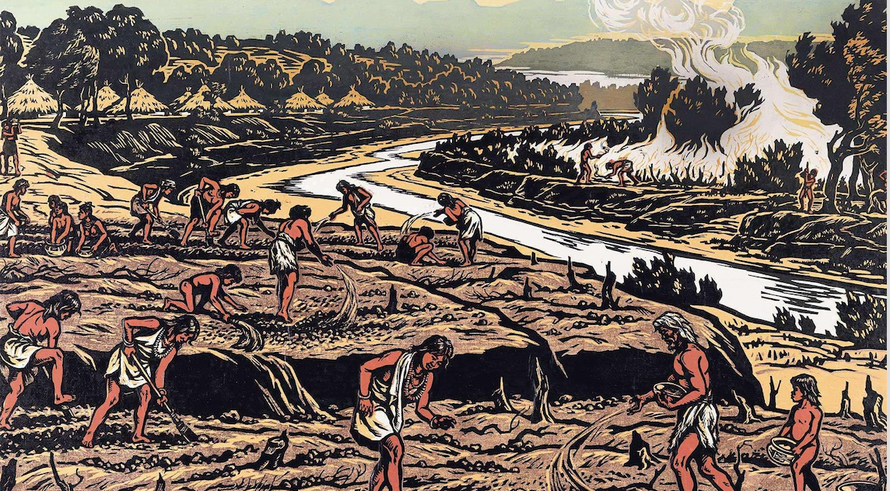

<!DOCTYPE html>
<html lang class="loading">
<head><meta name="generator" content="Hexo 3.9.0">
    <meta charset="UTF-8">
    <meta http-equiv="X-UA-Compatible" content="IE=edge,chrome=1">
    <meta name="viewport" content="width=device-width, minimum-scale=1.0, maximum-scale=1.0, user-scalable=no">
    <title>不平凡的一年 - 彪哥的生活</title>
    <meta name="apple-mobile-web-app-capable" content="yes">
    <meta name="apple-mobile-web-app-status-bar-style" content="black-translucent">
    <meta name="google" content="notranslate">
    <meta name="keywords" content="彪哥,"> 
    <meta name="description" content=" 作者：彪哥
 不平凡的一年


&amp;ensp;&amp;ensp;&amp;ensp;&amp;ensp;2020年过然是不平凡一的一年，当大家都在跨新时代的时候一场突如其来的新型冠状病毒打乱了原来的工作和生活节奏。刚开始,"> 
    <meta name="author" content="GongBiao"> 
    <link rel="alternative" href="atom.xml" title="彪哥的生活" type="application/atom+xml"> 
    <link rel="icon" href="/img/favicon.png"> 
    <link rel="stylesheet" href="//cdn.jsdelivr.net/npm/gitalk@1/dist/gitalk.css">
    <link rel="stylesheet" href="/css/diaspora.css">
    <script async src="//pagead2.googlesyndication.com/pagead/js/adsbygoogle.js"></script>
    <script>
         (adsbygoogle = window.adsbygoogle || []).push({
              google_ad_client: "ca-pub-8691406134231910",
              enable_page_level_ads: true
         });
    </script>
    <script async custom-element="amp-auto-ads" src="https://cdn.ampproject.org/v0/amp-auto-ads-0.1.js">
    </script>
</head>
</html>
<body class="loading">
    <span id="config-title" style="display:none">彪哥的生活</span>
    <div id="loader"></div>
    <div id="single">
    <div id="top" style="display: block;">
    <div class="bar" style="width: 0;"></div>
    <a class="icon-home image-icon" href="javascript:;" data-url="https://flymic.com"></a>
    <div title="播放/暂停" class="icon-play"></div>
    <h3 class="subtitle">不平凡的一年</h3>
    <div class="social">
        <!--<div class="like-icon">-->
            <!--<a href="javascript:;" class="likeThis active"><span class="icon-like"></span><span class="count">76</span></a>-->
        <!--</div>-->
        <div>
            <div class="share">
                <a title="获取二维码" class="icon-scan" href="javascript:;"></a>
            </div>
            <div id="qr"></div>
        </div>
    </div>
    <div class="scrollbar"></div>
</div>

    <div class="section">
        <div class="article">
    <div class='main'>
        <h1 class="title">不平凡的一年</h1>
        <div class="stuff">
            <span>二月 23, 2020</span>
            

        </div>
        <div class="content markdown">
             <p id="div-border-left-red">作者：彪哥</p>
 <h3 align="center">不平凡的一年</h3>


<p>&ensp;&ensp;&ensp;&ensp;2020年过然是不平凡一的一年，当大家都在跨新时代的时候一场突如其来的新型冠状病毒打乱了原来的工作和生活节奏。刚开始只是在新闻里有耳闻，后来回老家过年的时候每天早上起床看到的最新统计感染和死亡数据一天比一天多。大年初五前出行还算比较方便，庆幸在老家平安的过了一个年。后面几天由于疫情越来越严重村上县上都设了卡，只能在家学习充电。重新捡起丢了又快5年没动的java，把基础和特性都过了一遍。一方面我对语言没有偏见，网上看耗子哥的博客说要系统的学习设计模式和服务器熔断技术还是需要java才能系统的去学与应用，另一方面是生态好。<br><br></p>
<p><br><br></p>
<p>&ensp;&ensp;&ensp;&ensp;在家学习的一周时间还算比较充实，不过我喜欢在安静独处的环境学习。今年的年计划目标也顺着疫情计划有所改变， 又重新规划近几个月的计划与目标。按时间算今年出来工作快5个年头了，一般搞这一行如果有个3~5个年头都有所反思，5年之痒是进步了还是退步了呢？成长空间等问题出现了，我也慎重考虑过。今年我会把主要的精力分配在“换血”上。新时代都2020年了我们工作的方式和前大有不同，我有一种预感未来集中式的办公将在5年内渐渐减少。以后的工作会有越来越多的远程办公（remote）模式，团队来至世界各地，自由职业者将越来越多，个人特色会越来越明显，网络5G的普及虚拟化应用成为可能。我也在想我们程序员特别是“码农”天天做业务需求，天天加班而忽略了个人成长是多么的可怕。中国是人口大国遍地都是程序员，但真正优秀的程序员占少数。我已经能感觉出危机感，最近3年人工智AI能会越来越厉害取代程序员，取代重复的劳动力，让工程师站在更高的角度思考问题。<br><br></p>
<blockquote>
<ul>
<li>微软人工智能Cortana</li>
</ul>
</blockquote>
<p></p>
<br>

<p>&ensp;&ensp;&ensp;&ensp;在过去的几年里面我一直不爽的一种感觉就是公司的加班文化，一个人的精力被分割的支离破碎，加班12点回来哪还有什么精力去学习呀。最近越来越觉得30岁前的每一天是多么的宝贵，这段时间正是学习和成长的关键时期。所以我决定了今年要好好的给自己“换次血”系统的去学习新技能提升综合能力。时代变化的太快了吃老本肯定是不行的，要想让自己的不被时代淘汰，只有你反应的更快。谁不渴望蓝天白云自由浪漫和生活呀，为了让自己活的更有人的尊严，我们必须对自己负责。<br><br></p>
<p>&ensp;&ensp;&ensp;&ensp;这次疫情加快了科技的进展步伐，就这个远程办公来说吧，几乎对我们IT行业没有什么影响，程序员在家和在公司都一样可以写代码提交，内网服务器有VPN和SSH穿透。看公司群里面有人说很想回公司，然而我从来没有这种感觉，反而觉得在家工作我的效率更高也休息的更好。公司这半个月的远程办公模式不知道salary会不会也和其它小公司一样要打个几折呢？远程工作全靠自律，我认直对待我的工作，反正我是做到问心无愧的。<br><br></p>
<p>&ensp;&ensp;&ensp;&ensp;<em>每个时代都有每时代的英雄</em>，他们为技术的进度做了不可磨灭的贡献。去年不是说走了很多老科学家吗？有人说这是国家的损失。我不这么认为，那些老科学家大概都八十九岁了，因为在那个时期的历史背影下面他们是英雄。就像那时我国要造核潜艇，很多精确计算，没有西方的计算机怎么办？全靠算盘打尺子量画图完成的。不得不佩服在那个艰苦年代的老一辈科学家。但长江前浪推后浪，现代的科学家有优质的教育环境下，他们有更好的条件和上一代科学家积累下来的经验与之技术的进步，越来越多优质的人才。<br><br></p>
<p><br><br></p>
<p>&ensp;&ensp;&ensp;&ensp;从近十年多我们身边的一些变化就可以看的出来，现在的中学生肯定是比我们那时的中学生优秀的，因为他们又更好的物质条件与优质的教育。而我们那个年代上中学放学回家还要去放牛和割猪草。科技的发达让现在的学生获取资源轻而易举的事情。总结如果我们在今天再用原来模式去解决新问题肯定是行不通的，<strong>刀耕田火种的年代已经过去。</strong>现代一定要用更新更好的方法，人类的进步就像是生物进化一样，环境的选择。<br><br></p>
<p>&ensp;&ensp;&ensp;&ensp;每当有历史性一刻的一年都是不平凡的一年，从这一年开始肯定有新的独角兽崛起。新的时代来了，让我们好好的迎接这个新时代吧！</p>
<br>


            <!--[if lt IE 9]><script>document.createElement('audio');</script><![endif]-->
            <audio id="audio" loop="1" preload="auto" controls="controls" data-autoplay="false">
                <source type="audio/mpeg" src="">
            </audio>
            
                <ul id="audio-list" style="display:none">
                    
                        
                            <li title='0' data-url='http://link.hhtjim.com/163/5146554.mp3'></li>
                        
                    
                        
                            <li title='1' data-url='http://link.hhtjim.com/qq/001faIUs4M2zna.mp3'></li>
                        
                    
                </ul>
            
        </div>
        
    <div id='gitalk-container' class="comment link"
        data-ae='false'
        data-ci=''
        data-cs=''
        data-r=''
        data-o=''
        data-a=''
        data-d='false'
    >查看评论</div>


    </div>
    
</div>


    </div>
</div>
</body>
<script src="//cdn.jsdelivr.net/npm/gitalk@1/dist/gitalk.min.js"></script>
<script src="//lib.baomitu.com/jquery/1.8.3/jquery.min.js"></script>
<script src="/js/plugin.js"></script>
<script src="/js/diaspora.js"></script>
<link rel="stylesheet" href="/photoswipe/photoswipe.css">
<link rel="stylesheet" href="/photoswipe/default-skin/default-skin.css">
<script src="/photoswipe/photoswipe.min.js"></script>
<script src="/photoswipe/photoswipe-ui-default.min.js"></script>

<!-- Root element of PhotoSwipe. Must have class pswp. -->
<div class="pswp" tabindex="-1" role="dialog" aria-hidden="true">
    <!-- Background of PhotoSwipe. 
         It's a separate element as animating opacity is faster than rgba(). -->
    <div class="pswp__bg"></div>
    <!-- Slides wrapper with overflow:hidden. -->
    <div class="pswp__scroll-wrap">
        <!-- Container that holds slides. 
            PhotoSwipe keeps only 3 of them in the DOM to save memory.
            Don't modify these 3 pswp__item elements, data is added later on. -->
        <div class="pswp__container">
            <div class="pswp__item"></div>
            <div class="pswp__item"></div>
            <div class="pswp__item"></div>
        </div>
        <!-- Default (PhotoSwipeUI_Default) interface on top of sliding area. Can be changed. -->
        <div class="pswp__ui pswp__ui--hidden">
            <div class="pswp__top-bar">
                <!--  Controls are self-explanatory. Order can be changed. -->
                <div class="pswp__counter"></div>
                <button class="pswp__button pswp__button--close" title="Close (Esc)"></button>
                <button class="pswp__button pswp__button--share" title="Share"></button>
                <button class="pswp__button pswp__button--fs" title="Toggle fullscreen"></button>
                <button class="pswp__button pswp__button--zoom" title="Zoom in/out"></button>
                <!-- Preloader demo http://codepen.io/dimsemenov/pen/yyBWoR -->
                <!-- element will get class pswp__preloader--active when preloader is running -->
                <div class="pswp__preloader">
                    <div class="pswp__preloader__icn">
                      <div class="pswp__preloader__cut">
                        <div class="pswp__preloader__donut"></div>
                      </div>
                    </div>
                </div>
            </div>
            <div class="pswp__share-modal pswp__share-modal--hidden pswp__single-tap">
                <div class="pswp__share-tooltip"></div> 
            </div>
            <button class="pswp__button pswp__button--arrow--left" title="Previous (arrow left)">
            </button>
            <button class="pswp__button pswp__button--arrow--right" title="Next (arrow right)">
            </button>
            <div class="pswp__caption">
                <div class="pswp__caption__center"></div>
            </div>
        </div>
    </div>
</div>


</html>
